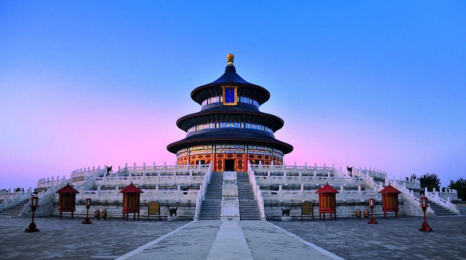

The Great Wall of China (traditional Chinese: 萬里長城; simplified Chinese: 万里长城; pinyin: Wànlǐ Chángchéng) is a series of fortifications that were built across the historical northern borders of ancient Chinese states and Imperial China as protection against various nomadic groups from the Eurasian Steppe. Several walls were built from as early as the 7th century BC, with selective stretches later joined together by Qin Shi Huang (220–206 BC), the first emperor of China. Little of the Qin wall remains. Later on, many successive dynasties have built and maintained multiple stretches of border walls. The most well-known sections of the wall were built by the Ming dynasty (1368–1644).

The Forbidden City (Chinese: 紫禁城; pinyin: Zǐjìnchéng) is a palace complex in Dongcheng District, Beijing, China, at the center of the Imperial City of Beijing. It is surrounded by numerous opulent imperial gardens and temples including the 54-acre Zhongshan Park, the sacrificial Imperial Ancestral Temple, the 171-acre Beihai Park and the 57-acre Jingshan Park. The Forbidden City was constructed from 1406 to 1420, and was the former Chinese imperial palace and winter residence of the Emperor of China from the Ming dynasty (since the Yongle Emperor) to the end of the Qing dynasty, between 1420 and 1924. The Forbidden City served as the home of Chinese emperors and their households and was the ceremonial and political center of the Chinese government for almost 500 years. Since 1925, the Forbidden City has been under the charge of the Palace Museum, whose extensive collection of artwork and artifacts were built upon the imperial collections of the Ming and Qing dynasties. The Forbidden City was declared a World Heritage Site in 1987.

The Temple of Heaven (Chinese: 天坛; pinyin: Tiāntán) is an imperial complex of religious buildings situated in the southeastern part of central Beijing. The complex was visited by the Emperors of the Ming and Qing dynasties for annual ceremonies of prayer to Heaven for a good harvest. The temple complex was constructed from 1406 to 1420 during the reign of the Yongle Emperor of Ming Dynasty, who was also responsible for the construction of the Forbidden City in Beijing. It is currently located in Dongcheng Beijing, China. The complex was extended and renamed Temple of Heaven during the reign of the Jiajing Emperor in the 16th century. Jia ging also built three other prominent temples in Beijing, the Temple of the Sun (日壇) in the east, the Temple of Earth (地壇) in the north, and the Temple of Moon (月壇) in the west. The Temple of Heaven was renovated in the 18th century under the Qianlong Emperor. By then, the state budget was insufficient, so this was the last large-scale renovation of the temple complex in imperial times.

Address : No.4 Jingshan Qianjie, Dongcheng District, Beijing, China
Phone : +86 10 8500 7421
Website : https://www.dpm.org.cn/Home.html